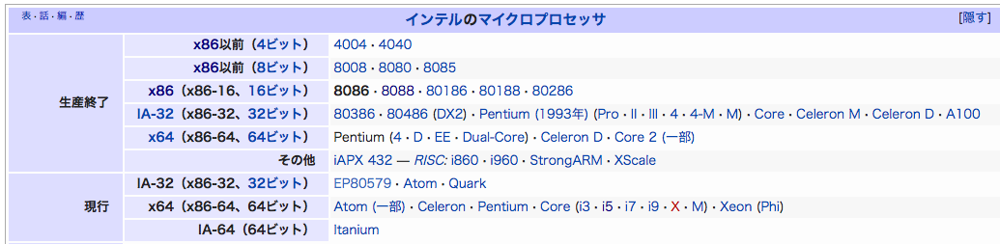

マイコンをもっと極めたい．その一心でひたすら低水準（マシン寄り）の勉強をしていると，結局アセンブリやリンカスクリプトの勉強に辿り着く．
坂井氏の「12ステップで作る組込みOS自作入門」をやってH8のアセンブリを勉強するか，それとも，もっと基礎から書かれたCASLの解説書の方が良いか．CASL IIの本ではKindleで読める「アセンブリ言語スタートブック」が良さそうだ．でもシュミレーターで動く言語じゃなく，実機で動く方がやる気が出る．結局，色々考えた結果，PC向けのアセンブリを勉強することにした．最近は自作OS本も色々と出ているしね．
そこで色々と漁った結果がこれ．「Assembly Language Step-by-Step: Programming with Linux, 3rd ed.」
前書きによれば最低限必要なものは以下の３つ．
- Intel x86ベースのLinuxマシン（カーネルver 2.6）
- NASM
- GDB
私はMacユーザなのでクロスコンパイラを用意し，VirtualBoxか何かでLinuxを走らせればよいだろう．
さてこの本，Amazonでは100近いレビューがあり高評価なのだが若干の低評価もある．まず第１章から３章をパラパラと飛ばし読みしてみて納得．比喩が多くて読むのに疲れる．著者によれば，「アセンブリを始めて勉強する人」のための本ではなく，「アセンブリでプログラミングを初めて学ぶ人」のための本というのがターゲットらしいので致し方ない．その分，核心の内容も丁寧な説明だろうということを期待して，読み飛ばすなという著者の指示がある第４章へ突入．
ここでようやくアセンブリの勉強らしき内容に入ってきた．第４章の本題はメモリ・アドレシング．ここで幾つかIntelのCPUが出てくるのだが，SE/30以来の生粋のMacユーザにはイマイチぴんと来ない．とにかくこの本はIA-32アーキテクチャをサポートした386以降の32bit向けのアセンブリ・プログラミングを学ぶということだ．
そこでIntel CPUの種類を調べてみた．
- 8086 — 16bitプロセッサ．こいつがx86（80x86）の呼称の原型（1978年発表） ．これ以降のCPUは8086用コードを実行できる仮想8086モードを持つ．
- 8088 — 同じく16bitプロセッサで1979年発表．
- 80286 — Intelの16bit最後のプロセッサ．
- 80386 — ここから32bitプロセッサ時代に突入．これがいわゆるi386アーキテクチャの原型．IA-32は32ビットの命令セットのことで，i386以降の32bitプロセッサはこの命令セットを理解する．
Wikipediaの表がとてもわかりやすいのでここに再掲．なるほど．我らが青春時代に流行っていたPentiumプロセッサはIA-32アーキテクチャなのね．これでスッキリした．
